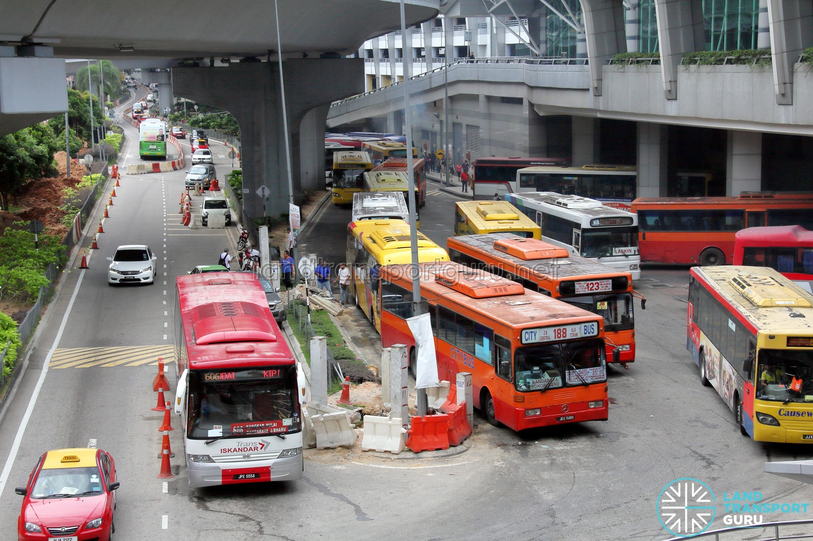

Overall Easy Diagram at a glance. (Click to enlarge)
MyBAS Johor Bahru was implemented since 31 March 2022, replaces existing bus services progressively over several phases, aiming to enhance commuters' experience on public transportation with published bus schedules, cashless payment, electric buses, and upgraded passenger facilities. Bus routes operating under this scheme uses buses in a standard myBAS livery.
Trunk routes are prefixed with "T" and feeder routes are short routes prefixed with "F".
Below is Table for Johor Bahru Local Bus Routes

| Route No | Route | Bus Service |
|---|---|---|
| 2 | Larkin ⇔ Ayer Hitam | City Bus |
| 3 | Larkin ⇔ Pontian | City Bus |
| 13 | JB Sentral ⇔ Kulai | City Bus |
| 15 | JB Sentral ⇔ Bandar Selesa Jaya | City Bus |
| 39 | Larkin ⇔ Masai | City Bus |
| 52T | Pontian ⇔ Gelang Patah | City Bus |
| 96 | Larkin ⇔ Pontian | City Bus |
| 123 | JB Sentral ⇔ Permas Jaya | City Bus |
| 208 | Larkin ⇔ Masai | Maju |
| 229 | JB Sentral ⇔ Kulai Terminal | Maju |
| AA1 | JB Sentral ⇔ Senai Airport | Causeway Link |
| CT1 | JB Sentral -> Bayu Puteri | Causeway Link |
| F100 | JB Sentral -> KSL City | Causeway Link |
| F200 | Masai -> Bandar Seri Alam | Causeway Link |
| F201 | Masai -> Taman Rinting | Causeway Link |
| IP01 | Puteri Harbour Ferry Terminal ⇔ Larkin | UEM Sunrise |
| IP02 | Puteri Harbour Ferry Terminal ⇔ AEON Bukit Indah | UEM Sunrise |
| JPO1 | JB Sentral ⇔ Johor Premium Outlets | Causeway Link |
| S&S 8 | Taman Desa Idaman ⇔ Senai | S&S |
| T10 | JB Sentral ⇔ Kota Tinggi | Causeway Link |
| T11 | Taman Setia Indah ⇔ JB Sentral | Causeway Link |
| T12 | Ulu Tiram ⇔ AEON Tebrau City | Causeway Link |
| T13 | Larkin ⇔ JB Sentral | Causeway Link |
| T20 | JB Sentral ⇔ Kota Masai | Causeway Link |
| T21 | JB Sentral ⇔ Permas Jaya | Causeway Link |
| T22 | Larkin ⇔ Masai | Causeway Link |
| T30 | JB Sentral ⇔ Taman Putri Kulai | Causeway Link |
| T31 | Taman Pulai Indah ⇔ JB Sentral | Causeway Link |
| T32 | JB Sentral ⇔ Bandar Selesa Jaya | Causeway Link |
| T33 | JB Sentral ⇔ Taman Tan Sri Yaacob | Causeway Link |
| T40 | Larkin Sentral ⇔ Gelang Patah Sentral | Causeway Link |
| T41 | Larkin Sentral ⇔ Puteri Harbour Ferry Terminal | Causeway Link |
| T42 | GP Sentral ⇔ Pendas | Causeway Link |
| T43 | Puteri Harbour ⇔ AEON Bukit Indah | Causeway Link |
| T50 | Larkin ⇔ Pontian | Causeway Link |